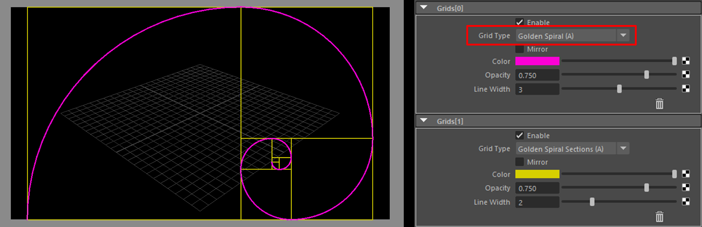

既知の問題¶
このページの目次:
Colorアトリビュートの色を変更しても、ビューに直ぐに反映されない¶
これはアトリビュートエディタの仕様で、画面が直ぐにリフレッシュされないのが原因です
Shelfの
Refreshボタンをクリックするか、カラー以外のアトリビュートを変更し、画面をリフレッシュさせてください
foregroundやbackgroundの画像をfileノードで設定しても表示されない¶
この症状は、 Maya2023 で確認されています
Shelfの
Refreshボタンをクリックし、画面をリフレッシュさせてください
Gridを複数設定すると、表示されないものがある¶
次の2つのGridは、先頭で指定しないと描画されません
Golden Spiral(A)Golden Spiral(B)(Mirror)
(
Golden Spiral(A)が2番目に設定されているので、ビューに表示されません)¶
原因は、他のGridと描画処理が違う為です
Gridの描画の順番を変えて対応をお願いします
(
Golden Spiral(A)を先頭で指定すると、ビューに表示されます)¶
Note
ここに書かれていない、バグ・トラブルがありましたら、「バグ報告・新機能の提案など」からご報告をお願いします。
報告いただいたバグやトラブルなどの対応状況は Issues にて確認することができます。